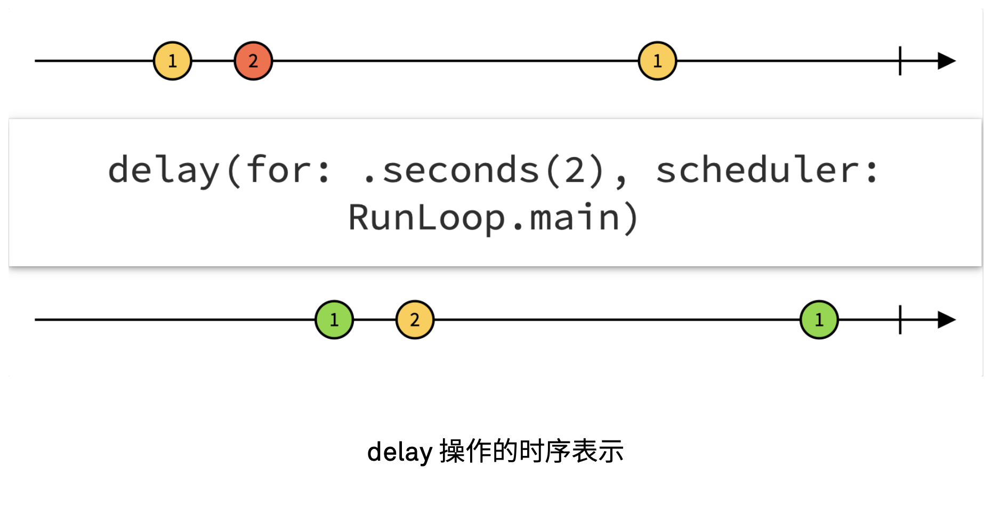
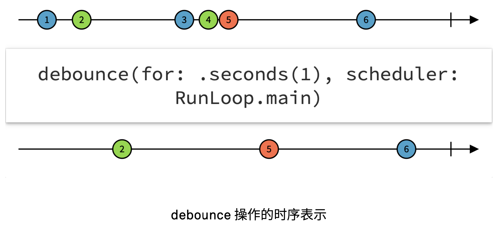

异步编程与Combine
异步编程与 Combine
异步编程

Combine
Combine: Customize handling of asynchronous events by combining event-processing operators.

Publisher
Publisher 负责发布事件。
1 | public protocol Publisher { |
Publisher 可以发布三种事件:
- output：事件流中发布新的值，类型为 Output；
- failure：发生错误，事件流终止，类型为 Failure； (
.failure(e)). - finished：事件流结束； (
.finished)
Operator
scan
Publisher 的 scan 方法提供一个暂存值，每次事件发生时执行一个闭包来更新这个暂存值，并准备好在下一次事件时使用它。这个暂存值也将被作为新的 Publisher 事件被发送出去。
1 | public func scan<T>( |
e.g.
1 | let foo: AnyPublisher<Void, Never> |
foo发出 E, E, E, …fooCounter发出 1, 2, 3, …
map
1 | public func map<T>( |
map 也是返回一个新的 Publisher，通过一个闭包来转化原来的 Publisher 的结果。
1 | let fooCounterStr = foo |
foo发出 E, E, E, …fooCounterStr发出 “1”, “2”, “3”, …
类似的还有很多啦，大抵都是用这种函数式的形式，来对原有的 Publisher 进行变形等逻辑操作。这些操作就扮演了 Operator 的角色。
每个 Operator 都使用上游 Publisher 所发布的数据作为输入， 以此产生的新的数据，然后自身成为新的 Publisher，并将新的数据作为输出， 发布给下游。
通过一系列组合（Combine），就得到了一个 Publisher 的链条。首部是发生的事件，中间对事件进行变形处理，末尾就得到了可以直接供给 Subscriber 消费。
Subscriber
1 | public protocol Subscriber { |
Combine 里面也已经提供了一些常用的 Subscriber 了，例如 Sink 和 Assign。
Sink
Sink 是个通过闭包去处理接收到的值的 Subscriber。
调用 sink 方法，可以把 Sink Subscriber 加到 Publisher 的链条末端：
1 | public func sink( |
通过给 sink 的闭包，就对拿到的事件可以执行任意操作。可以用 Sink 结束响应函数式的 Publisher 链，最终桥接到基于闭包的指令式代码。
e.g.
1 | let foo = (0 ... 5).publisher.map { _ in } |
Assign
Assign，如其名，就是个专注于赋值的 Subscriber。assign 接受一个某 class 的实例以及对象类型上的某个键路径 (\.name)。当 output 事件到来时，其中包含的值就将被设置到对应的属性上去:
1 | import Combine |
其他角色
Subject
1 | public protocol Subject : AnyObject, Publisher { |
Subject 是用来给外部调用者通过 send 方法来发布 output 值、failure 或 finished 事件的。
和 Sink 刚好相反，Subject 可以完成“指令式 -> 响应式”。
PassthroughSubject
PassthroughSubject 是 Combine 中的一种 Subject 具体实现。PassthroughSubject 将 send 接收到的事件转发给下游。接收到才转发，没接收到就闲着。
1 | let mySubject = PassthroughSubject<Int, Never>() |
运行输出：
1 | value: 666 |
CurrentValueSubject
CurrentValueSubject 相当于是个带了缓冲的 PassthroughSubject。在订阅发生的瞬间，CurrentValueSubject 会把当前保存的值发送给订阅者，之后的行为就和 PassthroughSubject 相同了。
也就是说，它可以缓冲一个值：
1 | let anotherSubject = CurrentValueSubject<Int, Never>(1024) |
输出：
1 | 开始监听 |
把上面的两行注释取消：
1 | let ... |
则输出：
1 | 开始监听 |
Scheduler
Publisher：决定发布什么事件流 (what)；Scheduler：决定在什么地方 (where)、什么时候 (when) 发布事件和执行代码；
where
在网络请求之后，响应是在后台线程的，用用请求的结果更新 UI，就需要转到主线程：
1 | URLSession.shared |
RunLoop 就是实现了 Scheduler 协议的类型。receive(on: RunLoop.main) 把接收从后台线程转到主线程，以更新 UI。
when
默认情况下，Publisher 会尽量及时把事件传递给下游。但可以用 Scheduler 加入延迟。
delay：将事件逐一延后一定时间

debounce：延迟所有事件，直到在一定时间里没有新的事件到来，才发生最后一次事件的值。

参考
[1] 王巍《SwiftUI与Combine编程》ch5